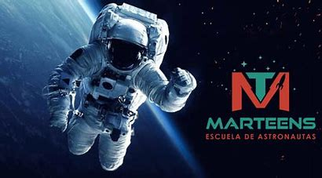

Embárcate en un viaje épico más allá de los confines de la Tierra. La exploración espacial es un viaje de descubrimiento, una odisea que nos lleva a los rincones más remotos del universo. Desde la superficie desolada de Marte hasta los anillos de Saturno, cada misión es un paso hacia lo desconocido, hacia lo inexplorado. La exploración espacial no solo despierta nuestra curiosidad, sino que también desafía los límites de lo posible. Únete a nosotros en este viaje, mientras desvelamos los secretos del cosmos y nos adentramos en lo desconocido. El espacio es el último gran misterio, y juntos, estamos destinados a descubrir sus maravillas
Nuestros Servicios
Exploración Espacial
Investigación Científica

Sumérgete en el emocionante mundo de la investigación científica espacial. Cada descubrimiento es una ventana hacia lo desconocido, una revelación que desafía nuestra comprensión del universo. Desde la física de los agujeros negros hasta la formación de galaxias, cada estudio nos acerca un paso más hacia la comprensión de los secretos del cosmos. La investigación científica espacial no solo expande nuestro conocimiento, sino que también nos desafía a pensar más allá de lo que creíamos posible. Únete a nosotros en este viaje de descubrimiento, mientras exploramos las maravillas del universo y desentrañamos los misterios que yacen en las profundidades del espacio
Educación Espacial

Prepárate para embarcarte en un viaje educativo hacia las estrellas. Nuestra misión es inspirar y educar a la próxima generación de exploradores del espacio. Desde clases interactivas hasta emocionantes talleres prácticos, nuestro programa de educación espacial ofrece una experiencia única para aprender sobre el cosmos. Descubre los secretos de la astronomía, explora los planetas del sistema solar y sumérgete en la fascinante ciencia que impulsa nuestras misiones espaciales. La educación espacial no solo es un viaje de conocimiento, sino también una aventura que despierta la imaginación y fomenta la curiosidad. Únete a nosotros mientras abrimos las puertas del universo y te llevamos en un viaje hacia lo desconocido